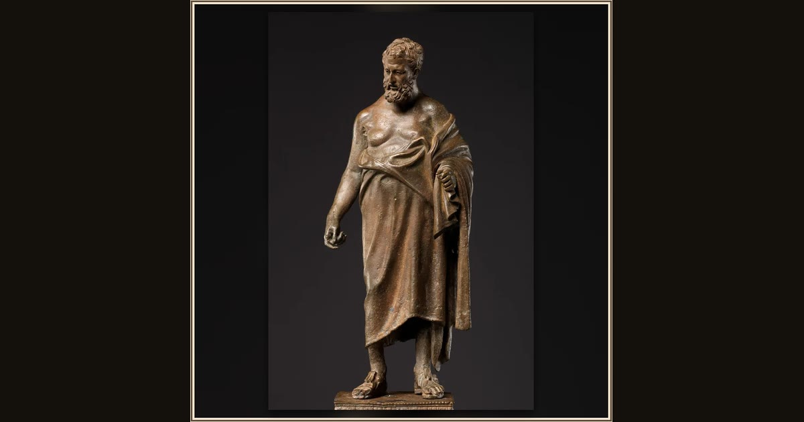

Bronze statuette of a philosopher on a lamp stand
Roman · late 1st century BCE · met
A Roman bronze statuette of a bearded philosopher in a mantle, set on a lamp stand, beside Epicurus's opening call to seek wisdom in youth and old age. (10.122) Explore its place in Epicurus's Letters and Principal Doctrines, Letter to Menoeceus, section 1.